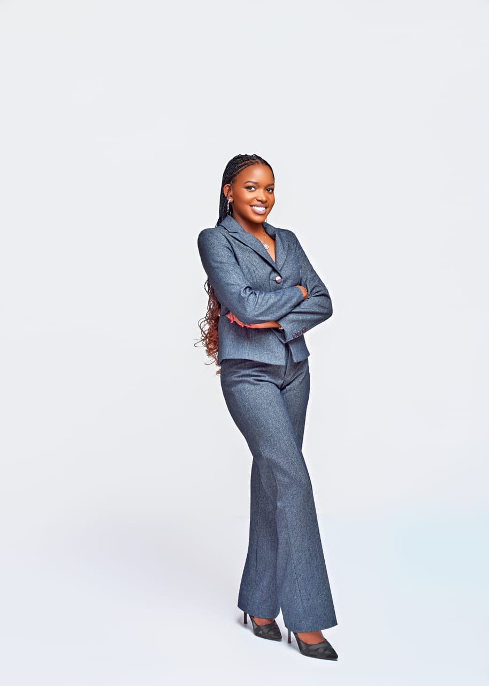

Topic About me
Hi, I'm Jesca
I'm Acham Jesca Ruth. I'm happiest when I'm making something, trying a new style or turning an idea into colour and shape. This page is my creative space.
Welcome to my bright corner for trying ideas, playing with style and making something with my hands.

I love art, fashion and design. I collect colours and ideas, then see what happens when I put them together.
I'm Acham Jesca Ruth. I'm happiest when I'm making something, trying a new style or turning an idea into colour and shape. This page is my creative space.
I collect colours and ideas from the world around me. A sketchbook, fabric scraps or a new outfit gives me a way to experiment and show what inspires me.
Making things has taught me that a first attempt does not need to be perfect. Trying different combinations, learning from mistakes and keeping going is how I find ideas that feel like my own.